Note: This is a student-submitted guide. Please comment or get in touch with me (Parker) for suggestions or clarification!
Intro
In the Introduction tutorial you will have been introduced to Unity by making a simple player controller. This one will also be a very simple controller with minimal code, but will be a lot more customizable for any kind of 2D game you need. The code for movement, jumping etc. will all be seperate, so you can make a top-down game without jumping (Stardew Valley, Cult of the Lamb) or a side-scrolling platformer (Super Mario Bros, Hollow Knight, Celeste).
You will be able to tweak any value you want for your movement to make it as satifsying as possible, including:
-
Top Speed
-
Acceleration
-
Jump Height
-
Jump/Fall Curves
-
Mid-Air Jumps
This tutorial will be heavily adapted from this video by Shinjingi on Youtube, which I highly recommend watching.
Part One: Setting the Scene
Firstly, create your Unity project and ensure it is using the Universal 2D template.
Before we make our character, we need a space for them to move on. Right click on the blank space in the Hierarchy window on the left and create a new 2D Sprite > Square. Set its Position in the Inspector panel on the right to X: 0, Y: -4.5, Z: 0. Then set its Scale to X: 20, Y: 1, Z: 1. This creates a floor.
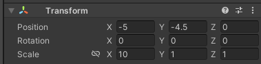 Quick tip: You can right-click the top bar on the Transform component & click Reset to reset all the values to default before this.
The floor is still just a sprite with no functionality, so we will need to add a Component to let it interact with the player using physics. Click the Add Component button at the bottom of the list of components in the Inspector, and search for the Rigidbody 2D component. Now that it’s been added, click the Body Type dropdown and select Static. Now the floor can interact with the player, but won’t move by itself.
Although we’ve given the floor a Rigidbody component, we still need it to be able to collide with the player, so they can stand on it. Add another new component and search for the Box Collider 2D component.
Now, select the Camera object in the Hierarchy panel, and set its Size in the Inspector panel to 10 so everything is in frame.
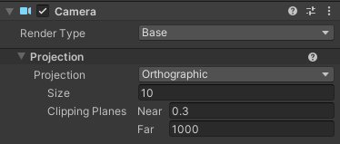
Part Two: Creating the Player
To create the player, right click the Hierarchy window again and add a new 2D Sprite > Square. Ensure their Position is at X: 0, Y: 0, Z: 0 so they are directly above the floor we made.
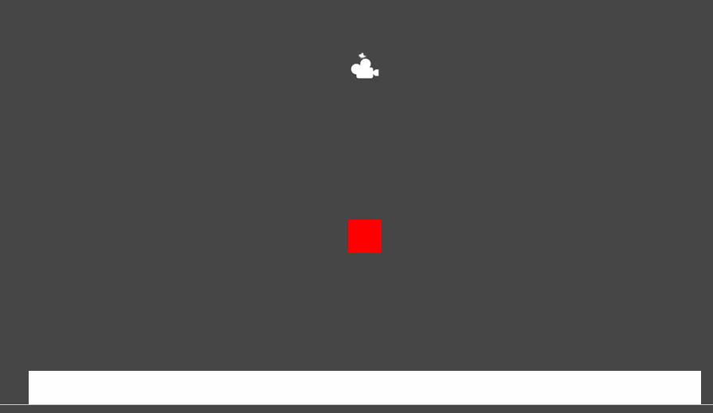
Now add a Rigidbody 2D component the same way as before. Set the Body Type to Dynamic, as our player will be moving. Set the Collision Detection to Continuous, and set Interpolate to Interpolate. This should give our player some accurate and smooth collisions for hitting the floor no matter how fast they’re going. Then under the Constraints dropdown, check Freeze Rotation on the Z axis. This stops your character from spinning around.
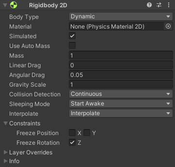
Now that’s done it’s finally time to start coding!
Part Three: Side-to-Side Movement
The different parts of the controller like moving, jumping etc. will be made in different script components, so you can pick and choose what you want to include in your game. For this first one we will be handling input and letting the player move side to side.
Handling Player Input
For player input we will be using Unity’s new Input System, as it allows for managing several input methods (Keyboard, Controller, etc.) much more smoothly than the old Input Manager. Information on installing it and an explanation of creating Input Actions using it can be found on the Input System Quick Start Guide.
Using the Input System
After creating an Input Actions Asset, open it and create a new Action Map called Gameplay. Rename the existing Action created in the Map to “Move”.
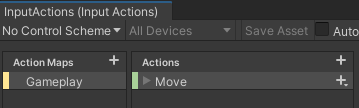 Remember to click the “Save Asset” button!
In the action properties panel on the right, set the Action Type to Value and the Control Type to Vector 2. This means our input (from a joystick or keyboard) is going to be read as a two-dimensional vector.
Now the action has been created, we need to add some bindings to it. Click the plus (+) icon next to the Move binding and select Add Up\Down\Left\Right Composite. Optionally, you can right click and delete the Up and Down bindings if you don’t need them (i.e if you’re making a platformer character). Now we have bindings for going up, down, left and right.
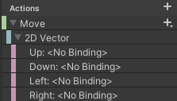
Select the Left binding & click on the dropdown next to Path in the properties panel. Then just hit the key you want to correspond to Left and select it with the mouse. I chose the “A” key in this case, and selected “A [Keyboard]” in the list. Then do the same with your Right binding. I chose the “D” key.
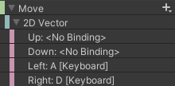
If you want to add gamepad support, click the plus icon and click Add Binding. Then under the Path search for and select “Left Stick [Gamepad]”.
Finally, click the Save Asset button at the top(!!!). In the Inspector Panel, select “Generate C# Class”, and hit apply. You’re done!
Creating the Input Script
Before implementing any movement code, we will first create a script component that handles the player’s input. Keeping it seperate to our Move script keeps our code clean and also gives us the possibility of having AI-controlled NPCs move using the same way as our character, which will be covered in a future tutorial. (Also, you’ll be able to use this controller in 3D games too!)
In the Scripts folder, create a new folder called Controllers. Then Create > C# Script. Name this script PlayerController. Open it in Rider (please refer to the “Your First Script” section in the Introduction tutorial if you do not know how to enable Rider in your editor!). You should be met with the default empty script code as shown below.
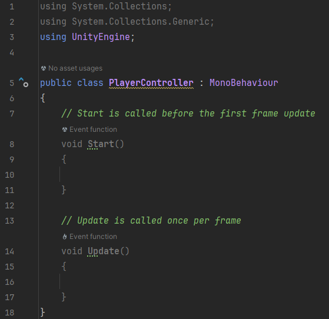
You can safely delete the two Start and Update functions here, as we won’t be needing them.
We will first create a variable for the InputActions asset we made earlier. Create a private variable with type InputActions and name “inputActions”.
Pro Tip: If you didn’t know already, press Tab to auto-complete the suggested value that pops up when coding. You can use the up/down keys to switch between selections.
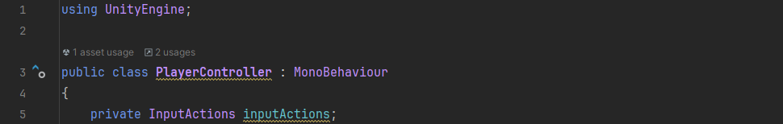
The scope of the variable is private as it’s only ever used within this script.
Now we need to enable the InputActions asset & the Gameplay action map by using an OnEnable() function under this.
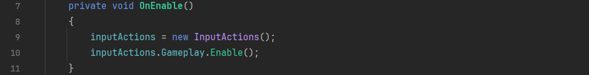
The OnEnable() function runs whenever this script is enabled (in this case immediately).
Now we need to make a function for getting the direction & magnitude of our input aka a vector. After declaring the variable, Create a public function called “RetrieveMoveInput” that takes a GameObject as an input.
Then, get it to return the value of the Move binding as a vector using the following code.
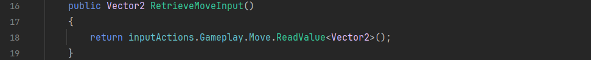
The function is public as we will be calling it inside our Movement script.
Now we can move onto the fun part: creating the movement code!
Creating the Movement Script
In the Scripts folder create a new folder called Capabilities. Then in the Capabilities folder create a new C# Script called Move.
Now it’s time to create our variables. Firstly we need one for the input script we just made. Declare a private PlayerController variable called “input”.
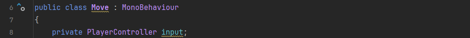
Now create some private float variables for the max speed and acceleration. We add [SerializeField] before the variables here with a limited Range so that they can show up as sliders to adjust in the Inspector panel.
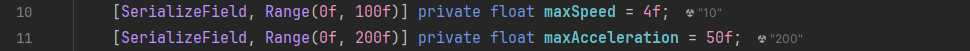
After that we need to declare variables for values that will be used in our movement calculations.
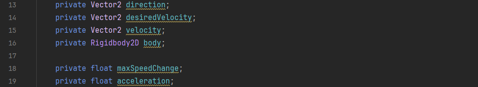
Delete the Start function and create an Awake function, and inside it set the “body” variable to be the Rigidbody 2D component we added earlier. We can do this by using the built-in GetComponent function.
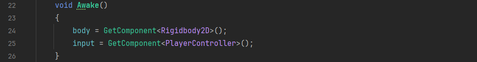
The Awake function is always run first in the script, no matter what.
In the Update function, set our direction to be the RetrieveMoveInput we created earlier. Then, we create a new vector consisting of just the X axis, or horizontal part, of our input direction. After that we set the desired velocity to be the horizontal vector with its magnitude multiplied by our Max Speed variable.
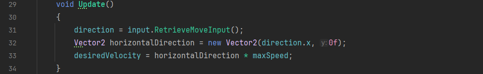
Now create a new FixedUpdate function. FixedUpdate repeats constantly like the Update method but doesn’t depend on framerate, but rather fixed intervals of time. If you’ve ever played an old game that runs way too slow or too fast depending on how fast your PC is, it’s because they didn’t do this.
In the function, firstly get our rigidbody’s current velocity to start with.
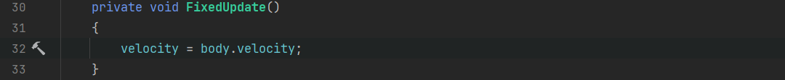
Now we calculate the maximum speed change value, by multiplying acceleration by the change in time. After that, we move our current velocity towards the max speed using that value.
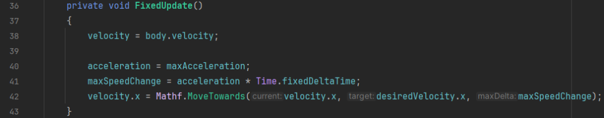
You don’t need to 100% understand all the maths for this. All you have to know is that the MoveTowards function will let us set how fast we get up to the max speed by changing Max Acceleration in the editor later.
Finally, set the rigidbody velocity to our newly calculated velocity value.
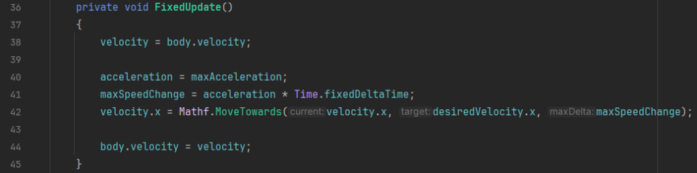
Now, back in the editor, select the player and add the PlayerController and Move script components.
Hit the Play button above the viewport and you should be able to move your character! Adjust the max speed and acceleration values to your taste. I suggest turning up Max Acceleration to make the movement feel less floaty.
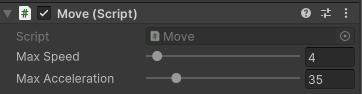
OPTIONAL: Up and Down Movement
This side to side movement would work great for something like a platformer. However, there are also games with top-down 2D movement like Don’t Starve, Cult of the Lamb and Vampire Survivors which you might want to make. Let’s modify our code to allow for that now.
Up and Down Input Actions
Firstly we need to re-implement the actions for “up” and “down” in our Input Actions asset. Go back to our 2D vector binding and bind new buttons for the Up and Down parts like we did earlier. In this example I used the W and S keys respectively.
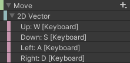
Now all we need to do is update our movement script to let us move up and down.
Modifying the Movement Script
Open the Move.cs file back up. You’ll see that there’s already an error when we set the direction variable, as we were only setting the X axis part of it.
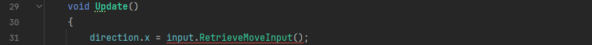
Delete the “.x” part at the end here too.
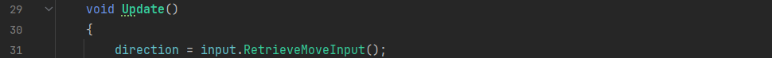
In the line under where we calculate our desired velocity, remove the vector we created with the Y part set to zero, and just replace it with our input direction variable.
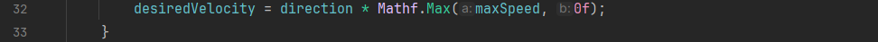
Now, in our FixedUpdate function, remove all the “.x” parts we added to the velocity and desired velocity variables, and change the Mathf.MoveTowards function to a Vector2.MoveTowards function, as we’re dealing with 2D vectors instead of numbers now.
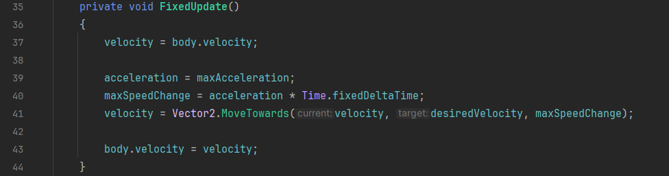
Now that all the coding’s done, go back to the editor and set the gravity scale of your Player object’s rigidbody to 0 in the inspector. You don’t want your player constantly going downwards in a top-down game.
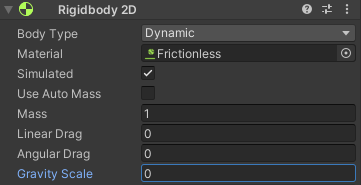
Now you should be able to move the character perfectly! Again, adjust the top speed and acceleration values to taste.
Part Four: Implementing Jumps
Once you have side-to-side movement working, you will probably want to implement a Jump capability. To do that we first need to add a new input binding for it.
Adding the Jump Input
This is the same as creating your movement bindings, just open up your InputActions asset, and add a new Action using the plus at the top of the Actions bar. Name this action “Jump”.
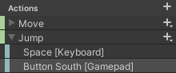
It should already come with a binding, so just set the path to whatever key or button you want. I chose Space on the keyboard, but you can also add a new binding for a button on the controller. I chose the South button, which is A on an Xbox controller, B on a Nintendo controller, and X on a Playstation controller. And O on an Ouya controller (okay I’ll shut up now).
Now we have to add the bindings to our Player Controller script. We may want the player to be able to influence the height of their jump depending on how long the button is pressed like in many other popular platformer games, so we will have seperate states for the jump starting and ending depending on the button input.
Firstly, open the PlayerController.cs script and create a new private bool variable called isJumping so we can keep track of whether the input is pressed.
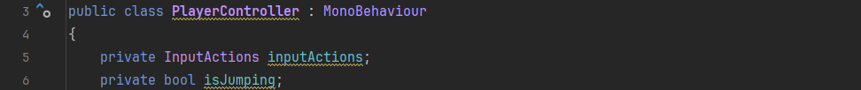
Now, we will need to add functions to set isJumping to true or false based on the input starting and stopping. Create two private void functions called JumpStarted and JumpCanceled. These take weird CallbackContext variables as input, they’re unfortunately necessary to include.
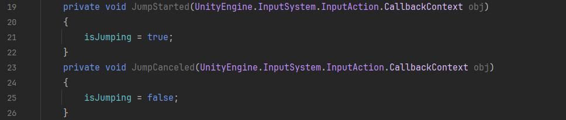
Now in the OnEnable function we make sure these functions are listening for the input action.
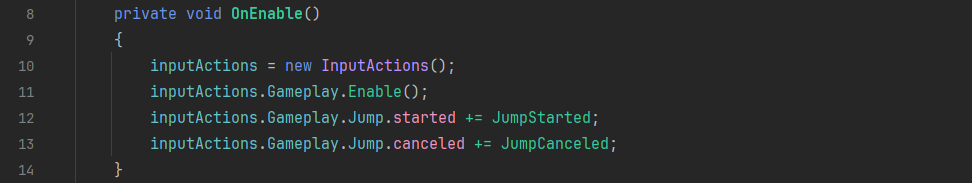
Finally, we need to create a new public function to return the value of our isJumping variable so we can use it in our movement script.
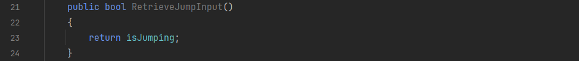
Now our inputs are ready for jumping. However, before we implement the jump code we need to add a check if the player is on the ground before allowing them to jump in the first place.
Creating a Ground Check
In your Scripts folder, create a new folder called Checks. Within that folder create a script called Ground. In this we are going to check all the things the player is colliding with (aka what they’re touching) and check whether one of them is the ground or not. We will first need to create a private void function called EvaluateCollision, that takes a variable of type Collision2D as input.
To check the collision we are going to use what is known as a for loop, basically meaning we go through a list of data (in this case contact points of the collision) and refer to the current one we’re on (the 1st, 2nd, 3rd etc…) using the variable “i”. Then we can run tests on this “i” point to see if it is flat enough to be considered ground. I have made a fantastically detailed diagram showing how a for loop iterates through a list:
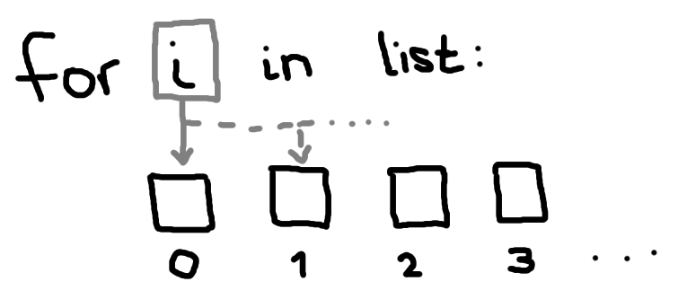
Also, computers start counting a list at 0. Dont ask me, that’s just how it works.
To do this we check the “normal” (basically the angle between us and the point we contact the floor). If the normal is 1 it is completely flat under us, but we will consider anything over 0.9 as ground just in case. If that is true, onGround is set to true, but otherwise it stays false.
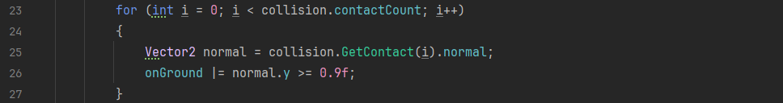
“i++” means we add 1 to i after we check the collision, so we can move onto the next one in the list.
Now we just have to run this code whenever we make contact, or a collision, with another object. Unity has some built-in functions for this, so we’ll use them now.
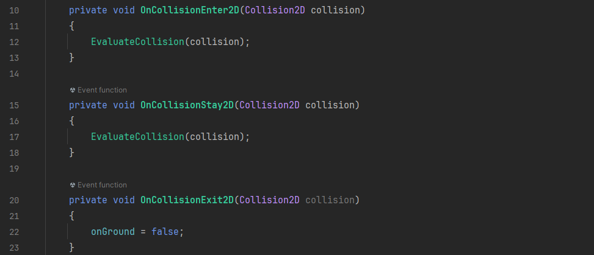
Finally, we’ll create a function to return our onGround value so we can use it in our jump script.
Creating the Jump Script
We’re going to create a whole new script for jumping, again for the sake of modularity. Go to the Capabilties folder and create a C# Script called Jump.
This jump method will have different amounts of gravity applied on the player for both their upwards and downwards arc of their jump independently. This results in a satisfying stronger plummet to the ground as the player falls, which has been used in 2D platformer games from the original Super Mario Bros all the way up to modern titles like Celeste. The amount we hold the jump button for will also be accounted for in this, allowing for shorter hops by simply tapping the jump button. This is obviously unrealistic so I would only recommend this method for 2D platformer type games.
To start we need to declare some variables again. We’ll start with the ones we can change in the Inspector panel. This will be our jump height, the maximum amount of mid-air jumps we can do, and the amount of gravity that gets applied upwards and downwards.
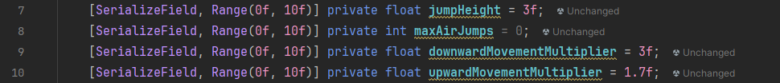
Then we declare the rest of the variables we’ll be using in our code.
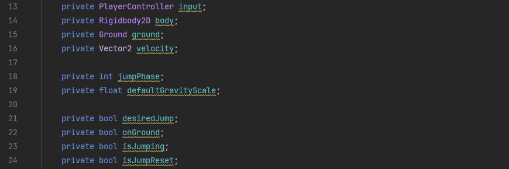
This is a lot to add, but trust me, we’ll be needing all of them.
Now, change the provided Start function to an Awake function, and within it get the Ground, PlayerController and Rigidbody components we need. We will also set the default gravity scale to 1 and make sure our JumpReset variable is set (this is to stop the player from constantly jumping when holding the button down).
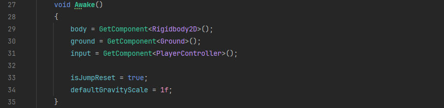
Now, in the Update function we check for our Jump input, and set the value of that to the desiredJump variable.
Now for the jump logic. We will start with the FixedUpdate function. Set the onGround variable using the GetOnGround function we wrote earlier and set our velocity variable using the current velocity of our rigidbody.
Now we set our jumpPhase variable, with an if statement checking if we are on the ground and not moving up or down.
After that, we make another if statement, seeing if our Jump Reset variable is true, and that the player has pressed the jump input. If both are true (signified by the && or “and” operator there), we set both to false and then execute a JumpAction function that contains our code for actually doing the jump. We’ll make that later.
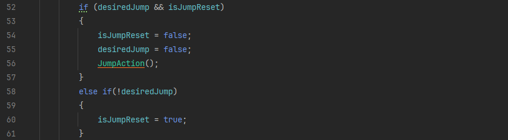
Under that, we make another if statement that applies our different gravity scales based on if we’re going up or down.
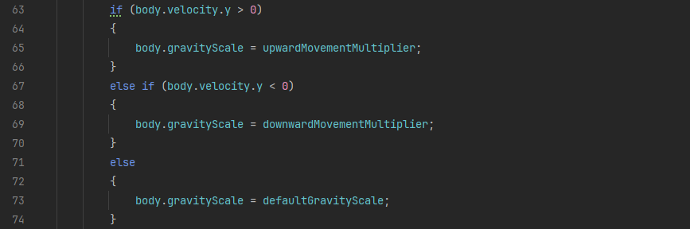
Finally, we set our rigidbody’s velocity to our own velocity variable.
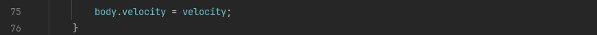
Now it’s time to make our JumpAction function. Start with an if statement with the following condition. This uses the || or “or” operator, to check if we are either:
-
On the ground;
-
Our maxAirJumps variable is greater than or equal to our jumpPhase. The jumpPhase is set to 0 when the player hits the ground and 1 when a jump is executed. Therefore, if maxAirJumps is set to 1, we get one mid-air jump and so on.
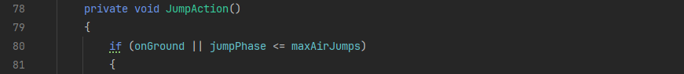
Now in the actual jump code we increase our jumpPhase by one, and calculate our jump velocity based on our set height using some maths. Then we add that to our velocity variable.
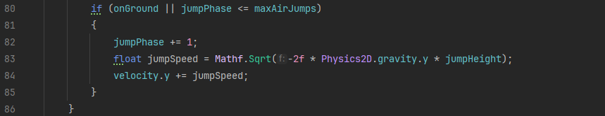
And we’re done! Add the Ground and Jump scripts to your player and you should be able to jump. Tweak the three parameters to make your jump feel satisfying.